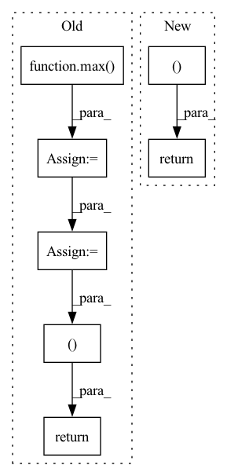

Pattern ID :9803
Before Change
list_of_files_b = glob.glob(self.baseline_filename.format(dt="*"))
latest_filename_b = max( list_of_files_b, key=os.path.getctime)
df_b = pd.read_pickle(latest_filename_b)
// df will have every trial, so group by which prop/part was used
grouped_b = df_b.groupby(groupby)
return grouped, latest_filename, grouped_b
def plot(self):
grouped, filename = self.grab_latest_groups()
// Setup table columnsAfter Change
grouped = df.groupby(groupby)
return grouped, latest_filename
// def plot(self):
// grouped, filename = self.grab_latest_groups()
// // Setup table columnsIn pattern: SUPERPATTERN
Frequency: 4
Non-data size: 7
Instances Fragment ID: 35162008
Project Name: mit-acl/nn_robustness_analysis
Commit Name: 3d2cd1f1bff1e6e54e76b61e120625ef91604889
Time: 2023-01-31
Author: nrober1122@gmail.com
File Name: nn_closed_loop/backward_experiments.py
M Class Name: NNScalability
N Class Name: NNScalability
M Method Name: grab_latest_groups(1)
N Method Name: grab_latest_groups(1)
M Parent Class: Experiment
N Parent Class: Experiment
M File Name: nn_closed_loop/backward_experiments.py
N File Name: nn_closed_loop/backward_experiments.py
M Start Line: 937
M End Line: 952
N Start Line: 906
N End Line: 914
Before Change
def collate_fn(data):
批处理，填充同一batch中句子最大的长度
x, spans, span_labels, relations, relation_labels, sequence_length = zip(*data)
max_len = max( sequence_length)
x = torch.stack(
[torch.cat([item, torch.zeros(max_len - item.size(0), item.size(1))]) for item in x])
sequence_length = torch.stack([item for item in sequence_length])
return x.float(), \
spans, \
span_labels, \
relations, \
relation_labels, \
sequence_length.long()
After Change
批处理，填充同一batch中句子最大的长度
input_ids, attention_mask, token_type_ids, spans, relations, span_labels, relation_labels, seq_len = zip(*data)
return input_ids, attention_mask, token_type_ids, spans, relations, span_labels, relation_labels, seq_len
Fragment ID: 35162009
Project Name: wireless911/span-aste
Commit Name: 0bfb965993be7750599aa2e9193cbe053056d082
Time: 2022-08-10
Author: zhhao@deloitte.com.cn
File Name: models/collate.py
M Class Name: AnonimousClass
N Class Name: AnonimousClass
M Method Name: collate_fn(1)
N Method Name: collate_fn(1)
M Parent Class:
N Parent Class:
M File Name: models/collate.py
N File Name: models/collate.py
M Start Line: 44
M End Line: 55
N Start Line: 44
N End Line: 46
Before Change
tiles_to_upscale = [] // list of all tiles to upscale
img_tmp = image_read(frame_list[0])
image_resolution = max( img_tmp.shape[1], img_tmp.shape[0])
num_tiles = image_resolution/tiles_resolution
num_tiles = check_number_of_tiles(num_tiles, multiplier_num_tiles)
frame_directory_path = os.path.dirname(os.path.abspath(frame_list[0]))
with ThreadPool(cpu_number) as pool:
pool.starmap(split_image, zip(frame_list,
itertools.repeat(num_tiles),
itertools.repeat(num_tiles),
itertools.repeat(False),
itertools.repeat(frame_directory_path)))
for frame in frame_list:
tiles_list = get_tiles_paths_after_split(frame, num_tiles, num_tiles)
list_of_tiles_list.append(tiles_list)
for tile in tiles_list:
tiles_to_upscale.append(tile)
return tiles_to_upscale, list_of_tiles_list, num_tiles
def reverse_split_multiple_frames(list_of_tiles_list,
frames_upscaled_list,
num_tiles, After Change
list_of_tiles_list.append(tiles_list)
for tile in tiles_list: tiles_to_upscale.append(tile)
return tiles_to_upscale, list_of_tiles_list
def reverse_split_multiple_frames(list_of_tiles_list,
frames_upscaled_list,
num_tiles, Fragment ID: 35162010
Project Name: djdefrag/qualityscaler
Commit Name: 9c1d7dcd4415b7434c57e7e15feac063a4962b21
Time: 2023-04-08
Author: jjluca96@gmail.com
File Name: QualityScaler.py
M Class Name: AnonimousClass
N Class Name: AnonimousClass
M Method Name: split_frames_list_in_tiles(3)
N Method Name: split_frames_list_in_tiles(3)
M Parent Class:
N Parent Class:
M File Name: QualityScaler.py
N File Name: QualityScaler.py
M Start Line: 251
M End Line: 276
N Start Line: 259
N End Line: 276
Before Change
max_seq_len = max(batch, key=func)[0].size(1)
freq_size = max(batch, key=func)[0].size(0)
max_trg_len = len(max(batch, key=func_trg)[1])
max_trg_transcript_len = len(max( batch, key=func_trg_transcript) [2])
inputs = torch.zeros(len(batch), 1, freq_size, max_seq_len)
input_sizes = torch.IntTensor(len(batch))
input_percentages = torch.FloatTensor(len(batch))
targets = torch.zeros(len(batch), max_trg_len).long()
target_transcripts = torch.zeros(len(batch), max_trg_transcript_len).long()
target_sizes = torch.IntTensor(len(batch))
langs = torch.zeros(len(batch)).long()
lang_names = []
for x in range(len(batch)):
sample = batch[x]
input_data = sample[0]
target = sample[1]
target_transcript = sample[2]
lang_id = sample[3]
lang_name = sample[4]
seq_length = input_data.size(1)
input_sizes[x] = seq_length
inputs[x][0].narrow(1, 0, seq_length).copy_(input_data)
input_percentages[x] = seq_length / float(max_seq_len)
target_sizes[x] = len(target)
targets[x][:len(target)] = torch.IntTensor(target)
target_transcripts[x][:len(target_transcript)] = torch.IntTensor(target_transcript)
langs[x] = lang_id
lang_names.append(lang_name)
// print(">", targets[0], langs, lang_names)
// print(target_transcripts)
return inputs, targets, target_transcripts, input_percentages, input_sizes, target_sizes, langs, lang_names
class AudioDataLoader(DataLoader):
def __init__(self, *args, **kwargs):After Change
// print(">", targets[0], langs, lang_names)
// print(target_transcripts)
return inputs, targets, input_percentages, input_sizes, target_sizes
class AudioDataLoader(DataLoader):
def __init__(self, *args, **kwargs): Fragment ID: 35162014
Project Name: audioku/cross-accent-maml-asr
Commit Name: decaa8936d18a5dee37b379bf18dc0edd48f3e30
Time: 2019-11-02
Author: gentaindrawinata@gmail.com
File Name: utils/data_loader.py
M Class Name: AnonimousClass
N Class Name: AnonimousClass
M Method Name: _collate_fn(1)
N Method Name: _collate_fn(1)
M Parent Class:
N Parent Class:
M File Name: utils/data_loader.py
N File Name: utils/data_loader.py
M Start Line: 325
M End Line: 362
N Start Line: 327
N End Line: 347